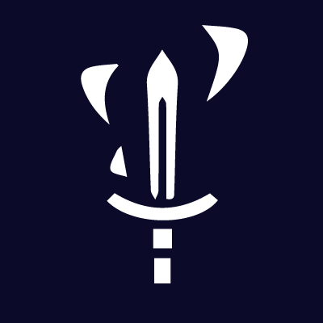
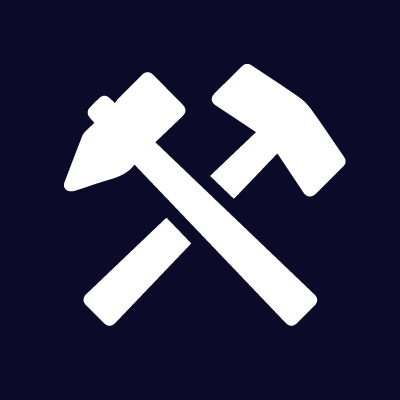

Broken Meta : Hub
The hub: DPS, professions, economy and dungeons in one window.
Four free addons, all on CurseForge: the Hub that brings everything together, and three dedicated addons so you only keep what you need.
The hub: DPS, professions, economy and dungeons in one window.

Every item's DPS value for your spec, your upgrades and your stat weights.

Find an available crafter, browse their recipes or level a profession at the best price.
Auction house prices, your bags' value, bargains and dungeon loot.
Interface\AddOns folder. You should get a BrokenMetaWeights folder (the HUB, required), plus a BrokenDPS, BrokenCrafter or BrokenCodex folder for each addon you picked./bmw): the window lists the addons you have, and the others with a link to CurseForge.No. Only Broken Meta : HUB is required (it's the shared window). BrokenDPS, BrokenCrafter and BrokenCodex are independent of each other: install only the ones you want, each works fine without the other two.
Yes. They are free, their code is readable, and they automate nothing: every crafter announce comes from their own click, like with group-finder addons. Players contact each other by whisper, themselves.
The game only lets an addon post your announce after a click from you. So your availability resets when you log in, and an announce lasts one hour.
No. The directory goes through the game, between addon players. Nothing is sent to the site unless you choose to share your data.
They need a recent version of BrokenCrafter, your realm and faction, and to have clicked Available. Click Refresh in the Crafters tab.